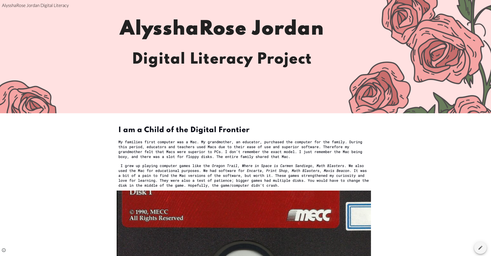

Digital Learning Project
Project 1: Digital Literacy Project

It took me a long time to finish my Digital Literacy Project. As I mentioned elsewhere, I'm a perfectionist. I let perfect be the enemy of good enough. I knew how I wanted my digital literacy project to look, but I couldn't get it right.
As a digital pioneer, I wanted to paint a story of what it was like to grow up in the ’90s and ’00s. I thought it would be interesting to show how technology has changed yet stayed the same. I knew that I wanted to go into a lot of detail about the first family computer, the original Nickelodeon website, and Myspace, as I consider those to be essential tech milestones for me.
I worked on the section about my childhood and teenage years first and then stepped away from the project for a bit after hitting writer's block. I wasn’t quite sure how to talk about my digital learning experience as an adult, as it's all now intuitive to me. Also, the story isn’t as interesting.
I also struggled with putting together my Personal Learning Network, mostly because I have a vast PLN. The PLN mindmap on my Google site is the unfinished first draft. I spent a lot of this semester thinking about how I wanted to put together my PLN 2.0.
Creating the Google Site page was probably the least time-intensive part of this project as I learned how to use Google Sites for a course last semester. Google sites is intuitive but not very customizable, which was frustrating. Choosing the font was probably the most challenging part of creating the page for me. I want to use a font that showed off my personality. I spent a few hours looking trying to find the perfect font on Google Fonts. In the end, I went with a rose header picture and used the font Spartan for my title and heading and Roboto for the body.
One of my favorite parts of this project was finding pictures. It was like a real walk down Memory Lane! I used Google and the Wayback Machine from the Internet Archives to source my images. I also wanted to include screenshots of my original Myspace page. However, that’s been lost to the ages.
I wish I had finished this project earlier, as it would have been fun to use it for the static site assignment. It definitely would have been a more customized page. Who knows, maybe I could have even made it look like a Myspace page!
Check out my Digital Learning Project Site Here:AlysshaRose Digital Literacy Project